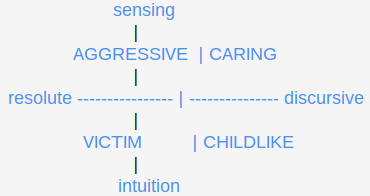

Life Scenarios: From Ethical Feelings to Sensory Wishes by Victor Gulenko¶
Warning
This page or section needs work.
From personal life of sociotypes.¶
Previous observations made on the personal life of various sociotypes gained in the course of consultations allow me to make some generalizations. In this article I will show how it is possible to predict the trend of development of relations in a pair if the people’s sociotypes are known. It should immediately be said that a specific forecast methods of traditional socionics impossible.
The practice of our laboratory suggests that in order to study the relationship of people on short-range communication needed deeper differentiation of levels [3]. Yet, delving into the erotic side of relationships between people, it is possible to allocate, on the one hand, subjects of feelings, but on the other - they are objects.
Subjects feelings - are sources of likes and dislikes, taking their subjective assessment of the other person as trustworthy. These are people who believe in an emotional choice. With an excess of feelings, they consciously reach for those who would like to share their experiences of the charge. In private life it is more important to love yourself than to be loved. Or rather, they do not lose the hope to initiate reciprocal feeling from those who attract them subjectively. It senses the subjects you most likely will find a one-sided love, unrequited.
Objects of the senses - the ones who lit himself only in response to the feelings of others. In any case, they do not show their feelings first, because they do not believe in an emotional (not to be confused with the sexual!) Choice. Therefore, objects of the senses are the easiest way: expect any signal that they are welcome. In sympathy, they usually respond sympathies, and antipathies - dislikes. Subjects of the senses, from the point of view of Socionics - this ethics that live heart more than the mind. Objects of the senses - is the logic of living longer mind than heart gusts. Ethics, therefore, tend to sensual choice on who they like; logic is selected usually the person to whom they like.
Note. I draw your attention to the fact that it is not about sex, but about the ethical-emotional behavior. By sympathy in this context, I understand the peace, rather than carnal desire.
However, we must not forget that human sociability is not confined to a private life. In his biography except for family and friends there is a second, no less significant part - colleagues and business partners. Here everything is just the opposite. Logic work pays always more effort and attention than ethics. It should not be this statement to mean that the first spends more time at work than the second. After all, while at work, you can among objectively necessary Affairs satisfy their personal communication needs!
Some are expecting, others are acting.¶
The situation is complicated by the fact that these two categories of people realize their inner motivation - work at the expense of his personal life or vice versa - in different ways. You can also select the two extremes between which oscillate people.
The first - a wait and see attitude. Her take those types who tend to take cognizance of other people’s suggestions. A conscious expectation can be directed towards business proposals, if this logic, any suggestions of a personal nature, if it is ethics. Either way - it’s an introvert position - the types that take more than give out, and if they give out, it was mostly in response to an external stimulus.
The opposite position - expansive, widening. Its owners themselves take the initiative, without waiting for others will. Ethics with this position, again, enterprising in his personal life, and logic - in the objective matters. This behavior is typical of extroverts - those types that are no longer give verbal or behavioral information, than take it from others.
And now a couple of comments about the communicability. Digression on the subject is necessary due to the fact that the concept of extra-introversion is interpreted in socionics is not so, as in traditional psychology. Among psychologists has developed a persistent view that extroverts - it necessarily sociable people and introverts - closed. But if it is so simple, then why it took Jung introduce new terms?
Communication is different. We need to clearly separate the formal and informal communication. Ethical extroverts if pure types do in any situation are focused on human contacts. But it is very sociable and many ethical introverts. This is not surprising, because they are well feel it in an informal atmosphere, where the main role is played by the subjective feeling.
Logical types, even extroverted, in these conditions can be very non-contacting, because then they have no reference points and therefore are only objects of other people’s sympathies, antipathies. In sphere of production, however, everything is just the opposite. Active subjects of business and affairs - are extraverted logical types. In formal communication, their focus on the external business environment is maximized. It is in contact not with his friends, but with colleagues and operatives, that logical extroverts far surpass the ethical types.
Communication styles.¶
The first distribution sociotypes on logic and ethics intersect with the second distribution to extroverts and introverts form four groups of communicability. Schematically, it looks like this:
[picture not included]
First, we analyze the contrasting, easily noticeable in the life of types of communicability - extroverted and introverted, ethics, logic.
1. Extroverted ethics, or PASSIONATE communication style. In conversation, their position is an active search for feelings. They bring emotions to people around them. In their life scenarios, it is typical of them to marry earlier on the average than individuals other sociotypes. However, they also divorce more frequently than other sociotypes. These types understand dialogue as an exchange of emotions, as a kind of “sailing” through active currents of life. This group is designated as ER: their Ego blocks hold either ethics of emotions E (Fe) as the first function, or ethics of relations R (Fi) as the second function.
2. Introverted logic, or COLDBLOODED communication style. Their communication style is opposite to the “Passionate” group. Their position in informal dialogue is a passive anticipation of feelings. Communication of these types flows according to established courses and norms. Their life scenarios suggest that they marry later in life than representatives of other types and are not inclined to re-marry. Their marriages, as a rule, are the least successful. They understand communication as an exchange of lacking information of explanatory nature. Such communication doesn’t lose much if it is carried out only in a written form. This group is designated as LP: their Ego blocks contain either structural logic L (Ti) as the first function, or business logic R (Te) as the second function.
Among these two poles the communicability - a bright one and a dim one - are two medium types, which fit into the framework developed by society stereotypes of the behavior of the opposite sex.
3. Extroverted logic, or BUSINESS-INCLINED communication style. This is a stereotypically male communication style. Their communication style can be called an active expectation of feelings. Business-inclined sociotypes expect to meet their other half in the whirlpool of their activities. The standard image of a typical man prescribes him an active position in life, but not in the area of feelings. In romantic literature, the hero gets acquainted with his future beloved by rescuing her from troubles. These sociotypes interpret communication as a business cooperation. This group is designated as PL: their Ego blocks contain either business logic R (Te) as the first function, or structural logic L (Ti) as the second function.
4. Introverted ethics, or SINCERE communication style. This is a stereotypically female communication style. This position can be described as a passive search for feelings. Being ethical, sincere sociotypes confidently choose a partner who has appealed to them, but as introverts, they express their openness to relational contact by indirect signals. This is the kind of behavior that is expected from a woman during the premarital period in traditional societies. These sociotypes are most inclined to “home-making” with stereotypical distribution of roles: man as the bread-winner and defender of the family, woman as the guardian of the family and nurturer of children. They understand communication as an exchange of signs of soulful/heartfelt attachments. This group is designated as RE: their Ego blocks contain either ethics of relations R (Fi) as the first function, or ethics of emotion E (Fe) as the second function.
Complimentary communication styles.¶
4.1.
For analysis of intergroup relations, I will be relying on the following, known to me through experience socionics observations and consultations, tendencies in life:
Ethical type is instinctively drawn to logical type, and vice versa. The psychological atmosphere in a purely logical pair turns out to be too dry and boring, and in a purely ethical pair - very hectic and overloaded with emotions. Secondary in strength attraction is possible between two logical types if one of them has intensified emotionality, or between two ethical types if one of them possesses intensive logical inclinations.
Introvert is instinctively drawn to the extrovert, and vice versa, although the strength of this attraction and not as strong as in the first case. Extroverts win over, and introverts allow themselves to be won over. Peaceful coexistence of the two extroverts is possible only when they artificially divide their spheres of activity. Almost always, however, in such pair there arises a struggle for power, and the loser feels himself slighted. The union of two introverts may not be as unfavorable if one of them assumes the role of an active in the external world person. Without such special measure, this pair is practically destined to self-isolation.
4.2.
Conducting socionics consultations for harmonization of interpersonal relations in a couple, it is recommended to consider the following averaged scenarios of intertype dynamics.
“Business-like” (PL) and “Sincere” (RE) types.
The successful combination of these two types of communication styles allows to achieve homeostasis a self-sustaining state of equilibrium within the system and in its external interactions with the environment. In the event of internal disagreements between the partners, the “Business-like” partner, as an extrovert, actively influences the “Sincere” partner, who without much resistance yields to his influence. Due to “Sincere” partner’s ability to smooth out the sharp edges equilibrium is restored. When this couple has conflicts with others people, the “Sincere” partner feels more upset, since he/she is an ethical type. However, due to introversion, “Sincere” partner simply presents the problem to the “Business-like” partner, who undertakes appropriate measures. As a result, this pair is stable against destructive external influences.
“Passionate” (ER) and “Cold-blooded” (LP) types.
This is another good combination of types of communication, capable of providing natural self-regulation in a couple. This scenario unfolds as follows. In the event of internal conflicts in this pair, the “Passionate” partner begins to influence the “Cold-blooded” partner from the position of extroverted expansion in order to change his partner’s behavior to his favor. However, the “Cold-blooded” partner, being little inclined to emotions, does not give in to these attempts. However, over time his behavior changes simply as a consequence of changes in his own assessment of the situation. The “Passionate” partner feels satisfaction from this, and by that time his ardor has already cooled down, and conflict naturally extinguishes itself. In the case of external aggression, the “Cold-blooded” type is inclined to ignore it and continue with his activities as if nothing has happened. This restrained position is very appealing to the “Passionate” partner, for it allows him to take care of the emerging ethical issues on his own.
The types of interactions described above contain, in generalized form, 4 intertype relations. The most successful combinations are dual pairs LSE-EII, ILE-SEI, SLE-IEI, and LIE-ESI, followed by semi-dual, supervision, and conflict relations. Even conflicting relations, when partners gain certain safe distance, possess stability. In dual relations, on the contrary, homeostasis is reached only at close communicative distances.
4.3.
The following two kinds of relationships provide psychological homeostasis only partially. Compatibility between them is of average significance. Either internal disagreements or external destructive influence can undermine these relations.
“Business-like” (PL) and “Cold-blooded” (LP) types.
Events in this pair usually follow this scenario. Both partners in this pair are quite indifferent to ethical influences. “Business-like” partner tries to use “Cold-blooded” partner for his purposes, but his efforts don’t lead to anything. Over time and after a series of unsuccessful attempts, the desire of “Business-like” partner to change situation to his own tastes fades, and partners start drifting apart. Internal equilibrium, nevertheless, is attained in this way. In relation to people around them, this pair turns out to be insensitive. Each is busy with something of his own. However, if external influences are so strong that they affect the low-activity ethical functions of partners, quarrels begin between them concerning how to respond. This impaired balance with the outside world for them is very difficult to restore.
“Passionate” (ER) and “Sincere” (RE) types.
The particularities of adaptation to each other here are as follows. Each partner in this pair, being an ethical type, has a good sense and understanding that any conflict that arises between them has a very negative impact on life and activities of the other. However, only the “Sincere” partner will try to change his or her own behavior. The “Passionate” partner will only demand change in partner’s behavior. Since the “Sincere” type will usually yield, peace will be recovered after a series of emotional outbursts. If this pair has conflicts with others around them, events immediately become dramatized. In this pair, there is an observable tendency to transfer any impairment in external relations to their own internal conflicts. Any discussion of external events can easily lead to a quarrel. The driving force of such a scenario - an excess of emotions. Equilibrium of this pair is thus unstable against internal differences.
Less complimentary communication scenarios.¶
“Passionate” (ER) and “Business-like” (PL) types.
This life scenario is perhaps the most dynamic and controversial one. Since both partners are extroverts, each partner tries to change the behavior of the other. Both are active and do not wish to adapt to the other. “Business-like” partner finds an outlet in an even greater amount of work and activities, while “Passionate” partner attempts to sort out their aggravating relations. Conflict becomes even more inflated due to this. In relations with people around them, both try to actively influence the outside world and begin to compete with each other for leadership. With this, the “Business-like” partner plays a more active role in these collisions, because he believes that the “Passionate” partner’s lack of emotional restrained harms their common cause. This pair is quarrelsome: it is very difficult to achieve stability in it against both internal and external negative factors.
“Sincere” (RE) and “Cold-blooded” (LP) types.
This life scenario is infused with internal contradictions and oscillations. Due to introversion, in the event of disagreements, each partner seeks to change primarily himself or herself. However, the response of “Sincere” partner comes quicker and is more noticeable. Thus, he begins to believe that he is sacrificing himself for the sake of peace in this relationship. “Cold-blooded” partner as if doesn’t notice these peace-ensuring actions. An impression arises that he does not appreciate the sacrifices of the “Sincere” type. This creates tension in their relationship. At the same time, neither of them can change the surrounding them world towards a more favorable for them outcome due to their introversion. Therefore, external negative impacts on such a pair can easily destroy it. The more unstable in this respect turns out to be the “Sincere” partner, having sensitive perception of external sympathies and antipathies. Consequently, this pair does not have effective mechanisms for maintaining homeostasis.
Two “Business-like” (PL) types.
Both seek to influence their partner for the sake of achieving their own goals, but both are also unreceptive towards such influences. As a result of this, brief but intense conflicts often break out in such a couple. Both attempt to influence people around them, but don’t really know how to coordinate their actions. Each does everything for the purpose of turning the course of events in his favor. Compatibility improves only when both stand as a united front against an external competitor or opposition.
Two “Passionate” (ER) types.
In such highly communicative pair petty accusations against each other cannot be avoided. Each will try to affect the other in an extroverted manner, but neither of them gives way. It will seem to both of these partners that the other does not understand them, so there will be a strong desire to sort out relations. However, any attempts to prove one’s correctness to the other partner usually lead to nothing. Due to this, conflict does not fade for a long time. In contact with their environment, both compete in the emotional impact on it. Such a pair is easily made to quarrel, since the emotional excess in it must find an outlet. In the case of defending mutual interests against external encroachments the coordination of joint activities is complicated. Reaching equilibrium in communication for the long term in this pair is unrealistic.
Two “Sincere” (RE) types.
Each partner in this pair will try in every way to avoid collisions. This stabilizes the couple as a whole. However, if a conflict between them does arise, its cause will be seen in the actions of the other partner. This reduces the degree of reciprocity in relations. Although this pair easily compromises, it is also touchy and lacking in honesty. External problems each partner tries to solve independently, without the help of the other, as each soon becomes convinced that prompting the other to extraverted actions doesn’t lead to anything. The consequence of such a position - is mutual disappointment in the competitiveness of each other. However, the existence of a common acceptable goal or purpose can unite “Sincere” couple quite strongly. This goal should be in maintaining a warm psychological atmosphere and existing relations within the framework of significant to them micro-collective. For example, in raising children.
Two “Cold-blooded” (LP) types.
Rather unfortunate life scenario due to lack of activity and emotional warmth. Each of the partners is insensitive to the efforts of the other and responds to his actions with much delay. Therefore, although this couple rarely conflicts, there is practically no positive cooperation between them. One partner leaves the other partner alone, and is content that he’s not being bothered himself. Emerging conflicts fade rapidly, since no one “adds fuel to the fire”. When external circumstances change, each partner tries to independently adapt to the changes. Help for each other turns out to be minimal. Due to this, an atmosphere of alienation arises in this pair. Uniting goal or purpose can improve compatibility in this pair, such as development of methods, procedures, schemes, instructions, or forecasts.
“Benefit” types are better suited for joint enterprises than identical or business types. It has been observed that “benefactors” become pulled to their “beneficiaries”, hoping to find in them “contractors” (“executors”) of their ideas and plans [4].
Contact with psychoanalysis.¶
If by psychoanalysis we understand revealing unconscious causes for difficult to predict actions or experiences of a person, related to some extent with his libido, then socionics possesses in its toolbox several pairs of distinctive traits, which, even if with a stretch, but still allow one to simulate some general psychoanalytic personality traits. What are these traits? Firstly, the axis “sensing-intuition”. The effect of its poles is largely unconscious. Intuitive flashes of understanding - are the opposite of rational experience, attained over months and years. Sensing is in actuality innate instinctive reactions to possible irritations of the organism that is interacting with its environment, which are also rooted in the subconscious part of the psyche. By the way, at the everyday household level of life, sensing irrational types refer to the jungian sensing function also as intuition.
Secondly, there is the axis “resoluteness-discursiveness”. With the help of this pair of traits, the socion is divided into two pairs of blocks. The second and third quadra are “resolute” - or decisive (lat. resolvo - resolving, untangling, untying) i.e. given to hard, harsh, sharp volitional actions that abruptly resolve disagreements. The first and fourth quadra are “discursive” - or advisory (lat. discutio - to discuss, negotiate) i.e. given to open and broad discussions of any disagreements that arising in the course of action. This pair of typological traits, that is closely related to the primary values ??of quadra, takes its origin, apparently, in the Jungian archetypes of the collective unconscious.
Isolated by these two axes groups I will analyze in the light of latent psychosexual tendencies of sociotypes. I draw readers’ attention to the fact that now the discussion will be about instinctive, sensual aspect of erotic relationships, as opposed to the spiritual and the platonic, the consideration of which was in the first half of this article.
Thus, the axis “sensing - intuition”, which I include here for conditional representation of individual forms of unconscious, intersecting orthogonally with the axis “resoluteness-discursiveness”, that represents in its first approximation those psychological traits that Jung has called the collective unconscious, form four psychoanalytic groups of sociotypes:
Let’s assign these following names to the resulting groups:
Discursive sensory types: ESE, Enthusiast; SEI, Mediator; LSE, Administrator; SLI, Master; (S-group) - “Caring”
Resolute sensory types: SLE, Coordinator; LSI, Inspector; SEE, Politician; ESI, Guardian; (F-group) - “Aggressive”
Resolute intuitive types: EIE, Mentor; IEI, Lyric; ILI, Critic; LIE, Entrepreneur (T-group) - “Victim-like”
Discursive intuitive types: LII, Analyst; ILE, Seeker; EII, Humanist; IEE, Advisor; (I-group) - “Child-like”
For our purposes, it is useful to consider further male and female types separately.
Women’s styles.¶
“Caring” woman, or “woman-mother”. Inclined to care for her male partner. She is attracted to weak but intelligent men who accept her lead in daily activities. She likes to support, to protect, to cheer them up. These character traits that in the public opinion don’t evoke respect for men, this woman forgives or finds them perfectly acceptable.
“Aggressive” woman. Often tries to compete with men, including in erotic relations. Inclined to irony, ridicule, making jokes at the opposite sex. Likes to feel herself more competent than a man in any endeavor. During lovemaking she expects from a man deferential treatment, demonstrative weakness, emotional instability.
“Victim” woman. The ideal of this woman is a physically strong man, reminiscent of lead roles in action movies. She wishes to experience his force on herself, to resist his pressure, to feel herself a victim. In love games, she prefers different forms of opposition and confrontation, that fuel the passions of her partner. Women of this type sometimes have inherent masochistic traits, though not all of them consciously acknowledge it.
“Childlike” woman, or “woman-daughter”. The ideal of this woman is a kind, experienced, well-adapted to life man, who is usually older than her in age. In the presence of such a man she feels herself alike a girl, who is dependent on him almost in everything. In love games she prefers psychological factors - sincere conversation, predisposing music, creation of conditions for relaxation. Above all, she values leniency and support, attention to her problems, and care.
Men’s styles.¶
“Caring” man or man-father. Experienced, attentive to the inner world of a woman partner, who can positively predispose towards himself with protective courtship. In love games he very much appreciates feminine tenderness and vulnerability, and waits admiration of his life experiences and skills.
“Aggressive” man. This sociotype has an inclination to forceful possession of a woman. In love games loves to demonstrate a struggle. Can allow himself rudeness, sometimes causes women pain - both physical and moral. Expects a woman to yield to force.
“Victim” man. Idealizes a commanding woman. Adapts to her tastes, respects volitional qualities in her. In his behavior at times he emphasizes dependence and obedience, and other times comes out of control. In relationship with a woman he subconsciously awaits orders, catches, reprimands. Not receiving these kinds of reactions, he involuntarily provokes their manifestation.
“Childlike” man or man-son. Dependent, naive in worldly affairs, awaits from a woman practical and sincere support. Inadvertently emphasizes how he was passed by with attention and gone unnoticed, any of the wasted abilities and talents, and difficulties with adapting to life’s struggles. In women he values experience and responsiveness to his problems.
Psychosexual compatibility.¶
“Caring” woman is rejecting of intense, but rough caresses. Erotic games that are deprived of foreplay and based on force oppress her sexuality, thus relations with strong forceful men are often disappointing to her. The behavior of compatible man must be “child-like” i.e. reluctant, waiting-enticing. This woman loves caresses that are expressed as gentle, subtle touches of her erogenous zones. Relationship with a “Victim” man is not satisfactory to her either, because his caprices, tricks, and provocations of force from her surprise and repel her. Relations with similar to her “Caring” man after some time start to disappoint her, although she doesn’t have much against such a relationship. Sooner or later, she feels a lack of spiritual connection in them.
“Aggressive” woman searches for an object for her assertive and eager erotic actions. She is best matched by a man who behaves obediently but capriciously with her. Then she obtains pretext for aggression. “Victim” man idealizes such a woman, and at the same time he somewhat fears her. His behavior can be compared with the behavior of a page who is entirely devoted to the service of “beautiful lady”. On-going game - is the best cure for satiation. In relations with “Childlike” man, “Aggressive” woman will feel a lack of playful submission on his part. His unwillingness to adapt to her aggressive attacks cannot not put such a union on the brink of a break-up. Relations with similar to her “Aggressor” man on one hand flatter and ignite her passion, but on the other hand repel, as they don’t lead to the desired victory. Therefore, they may have only mixed success. “Caring” man unnerves her with his treatment of her as if she is a small child, which she perceives as humiliating.
“Victim” woman cleverly plays on her weakness, vulnerability, or disorganization, thus provoking “Aggressive” man to undertake prompt decisive actions. In love games, the greatest value for her are strong embraces and feeling the power of the male body, yielding to which she shows her submission to his will. “Caring” men seem comfortable to her, but too dull partners, while “Childlike” men in her heart she views as not sufficiently strong and resolute. With similar to her “Victim” men this woman enters into complex, full of subtext relations, competing with them in sacrificial attitudes and demanding for it special privileges. Frequently such games literally wear out and exhaust both of them.
At this point, I consider it necessary to mention that these psychoanalytic groups are not being considered in all detail, so some more subtle differences within them disappear. In particular, among “Victim” types the fact remains unnoticed that they can further be divided into the “tragic victims” (IEI and EIE) and “comic victims” (ILI and LIE).
“Childlike” woman. In erotic life, women of this type place much significance on sophisticated tenderness and psychology of relations. She, without any special for it intentions, demonstrates her fragility and child-like naivete by her own actions. This woman easily takes up interests and activities of a partner towards whom she is sympathetic. In love games, “Childlike” woman easily picks up the initiative of “Caring” man, demonstrating her own sophistication and imagination. She does pay attention to “Aggressive” men, of course, but she fears becoming close with them due to their instinctive behavior and their roughness. “Victim” men satisfy her only in part: they start off romantically, but then puzzle and confuse her by demonstrations of their suffering and their unpredictability. With similar to her “Childlike” men this woman will feel discomfort due to lack of attention and care for her needs. In such a couple the degree of alienation will slowly increase over time.
Peculiarities of talented people.¶
In concluding essay psychoanalytical groups, I wish to draw your attention to the fact that encountered significant age difference between spouses is other than social (material and cash considerations) and more clearly expressed psychoanalytical roots. I recall a well-known fact that male artists (poets, artists, philosophers and so on. P.), Especially the most talented ones, often choosing his girlfriend wife and women much older than himself. Why?
Apparently, the work associated with the development of a strong intuition functions - either I, or T. And this, as we know, belong to groups “Childlike” and victimization sociotypes. This writes E. Berne linking creativity in the forehead-century with the ego-state “child” [2]. I- and T-sociotypes need the patronage of sensory sociotypes - experienced and practical in life. Life experience comes with age, so very creative intuitive chosen as a life partner of a mature man. Examples. Goethe found a lover in the face of Charlotte von Stein, who was seven years older than him. The German philosopher FV Schelling was ten years younger than his lady Caroline Schlegel. Companion of Salvador Dali became Russian Elena D. Dyakonov, who was born 20 years before him.
More normal is seen by the fact that mature men, senior business and political organizations (as a rule, F- and S-types), marry very young girlfriends, often their secretaries. For example, the head of the Palestine Liberation Organization Yasser Arafat at 63 married a 29-year-old Suha taweel. Wife of the Minister of Foreign Affairs of Germany Hans Dietrich Genscher became his secretary Barbara.
It may be objected: it is due to the desire of young ladies to the material well-being. But this only proves that social patterns are rooted in the typological caused individual tendencies. Mate is much younger than themselves choose just very active and However, the rule is not without exceptions, especially if we are dealing with the most intimate human feeling, able to do any miracles.
Literature¶
Augustinavichiute, A. On Dual Nature of a Person. 1983.
Berne E. Games That People Play. Psychology of human relationships. - SPb .: Lenizdat 1992.
Gulenko V. V., Meged V. V., Ovcharov A. A. Diagnostic description of the individual options. 32. - K. 1991.
Gulenko V. V. Criteria of Reciprocity: Intertype relations as the interaction of temperaments and attitudes. - Kiev, 15.07.1992 // SMiPL, 1996, number 2.